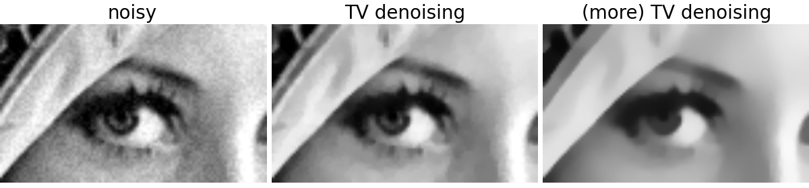

Denoising the picture of Lena using total variation¶
In this example, we denoise a noisy version of the picture of Lena using the total variation denoising filter. The result of this filter is an image that has a minimal total variation norm, while being as close to the initial image as possible. The total variation is the L1 norm of the gradient of the image, and minimizing the total variation typically produces “posterized” images with flat domains separated by sharp edges.
It is possible to change the degree of posterization by controlling the tradeoff between denoising and faithfulness to the original image.
Python source code: plot_lena_tv_denoise.py
import numpy as np
import matplotlib.pyplot as plt
from skimage import data, color, img_as_ubyte
from skimage.filter import tv_denoise
l = img_as_ubyte(color.rgb2gray(data.lena()))
l = l[230:290, 220:320]
noisy = l + 0.4 * l.std() * np.random.random(l.shape)
tv_denoised = tv_denoise(noisy, weight=10)
plt.figure(figsize=(12,2.8))
plt.subplot(131)
plt.imshow(noisy, cmap=plt.cm.gray, vmin=40, vmax=220)
plt.axis('off')
plt.title('noisy', fontsize=20)
plt.subplot(132)
plt.imshow(tv_denoised, cmap=plt.cm.gray, vmin=40, vmax=220)
plt.axis('off')
plt.title('TV denoising', fontsize=20)
tv_denoised = tv_denoise(noisy, weight=50)
plt.subplot(133)
plt.imshow(tv_denoised, cmap=plt.cm.gray, vmin=40, vmax=220)
plt.axis('off')
plt.title('(more) TV denoising', fontsize=20)
plt.subplots_adjust(wspace=0.02, hspace=0.02, top=0.9, bottom=0, left=0,
right=1)
plt.show()